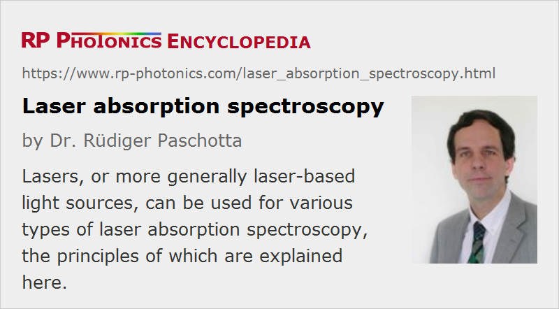

Laser Absorption Spectroscopy
Acronym: LAS
Definition: methods of absorption spectroscopy using laser light
More general terms: absorption spectroscopy
German: Laserabsorptionsspektroskopie
Categories: optical metrology, methods
How to cite the article; suggest additional literature
Author: Dr. Rüdiger Paschotta
There is a range of methods called laser absorption spectroscopy, where laser light is used to precisely measure absorption features of substances. The purpose of such kinds of spectroscopy is frequently to find out details on such substances, but in other cases one utilizes known details of substances for other purposes. For example, laser absorption spectroscopy is often used for realizing optical frequency standards, e.g. by stabilizing the wavelengths of a laser to a precisely defined absorption transition. See below for further details on applications.
Principles of Laser Absorption Spectroscopy
Direct Absorption Spectroscopy
A frequently used method involves that a tunable narrow-linewidth laser (frequently a single-frequency laser) is tuned through some wavelength range, and the light absorption in some sample is measured as a function of that wavelength. The absorption is often obtained by measuring (a) the optical power of a laser beam which is transmitted through the investigated medium and (b) the optical power of a reference beam (obtained with a beam splitter between the laser and the investigated medium), which is not affected by the medium. That way, one can largely avoid that power fluctuations of the laser (intensity noise) affect the results. In many cases, one uses a balanced photodetector, essentially measuring the difference between two optical powers (rather than their ratio).
Obviously, the obtained spectral resolution is limited by the laser linewidth, which is therefore often minimized with suitable laser designs. Extremely high precision is required in the area of optical frequency metrology, e.g. for realizing extremely precise optical clocks. However, direct absorption measurements are subject to low-frequency laser noise and therefore limited in terms of sensitivity; substantial improvements are possible with modulation spectroscopy (see below).
In some cases, a laser wavelength is swept through a certain range very rapidly (→ wavelength-swept lasers) for rapid acquisition of absorption spectra. However, the achievable spectral resolution is ultimately limited by the interaction time. Therefore, highly precise measurements often require very slow tuning of the laser.
In some cases, relatively inexpensive tunable diode laser, often in the from of external cavity diode lasers (ECDL), can be used (tunable diode laser absorption spectroscopy, TDLAS). In other cases, substantially more sophisticated laser sources are required, which e.g. can provide far lower linewidths and/or larger tuning ranges.
See also the article on laser spectroscopy, which gives an overview on laser types used in spectroscopy.
Setups with Long Propagation Lengths
For highly sensitive detection e.g. of substances in air or other gases, it is necessary to have a substantially long propagation length of light in the gas. Therefore, various types of multipass gas cells (e.g. of Pfund, White or Herriott type) has been developed, where a light beam (typically a laser beam) propagates through the cell many times. That way, long propagation lengths in the gas can be obtained even with a compact optical setup.
Cavity-enhanced Absorption Spectroscopy
Effectively increased propagation lengths can also be achieved by placing a sample inside an optical resonator (cavity). Resonators with high Q factor (high finesse) allow for substantially improved sensitivities.
One possibility is continuous-wave cavity-enhanced absorption spectroscopy, where the optical resonator stays tuned during frequency sweeps of the laser source. The synchronization of laser and resonator may be achieved with an electronic feedback loop or with passive locking techniques, using optical feedback from the resonator to the laser.
Another method is cavity ring-down spectroscopy, where light is injected in the form of a short pulse, and one measures the decay time of light for different cavity lengths, corresponding to different optical frequencies. It is also possible to do such measurements with multiple cavity modes simultaneously.
Intracavity Laser Absorption Spectroscopy
Absorption measurements with particularly high sensitivity can be achieved with intracavity laser absorption spectroscopy, where a sample is placed inside a laser resonator. Typically, one records the laser output spectrum at a certain time after turning the pump source on. The laser would normally exhibit broadband emission with a smooth spectrum, but absorption lines create dips in the spectrum. Due to the large number of resonator roundtrips within the build-up time of radiation in the laser, the method can be very sensitive.
See the article on intracavity laser absorption spectroscopy for more details.
Frequency Modulation Spectroscopy
Absorption features are not always directly investigated by measuring wavelength-dependent absorption, as explained in the section on direct laser absorption spectroscopy. Instead, one may employ frequency modulation spectroscopy (also called wavelength modulation spectroscopy) [4], where one uses a frequency-modulated laser source. Due to the frequency-dependent absorption, the absorption of the frequency-modulated beam becomes time-dependent, so that a power modulation of the transmitted beam can be detected e.g. with a photodiode. Typically, one does not simply measure the magnitude of the induced power modulation, but rather processes the photodetector signal in an electronic mixer together with the modulation signal.
The optical frequency modulation is in some cases directly obtained by modulating the laser; for example, a laser diode exhibits a frequency modulation (together with an amplitude modulation) when its drive current is modulated. In other cases, one uses an electro-optic modulator as a phase modulator in conjunction with a continuously emitting laser (often a single-frequency laser).
Frequency modulation spectroscopy generally allows for substantially higher sensitivities than direct absorption spectroscopy, essentially because the laser noise limiting the sensitivity is noise around the modulation frequency, rather than around zero frequency. Note that laser noise is usually strong at low frequencies but decays strongly at higher noise frequencies.
Frequency modulation spectroscopy can also be combined with cavity-enhanced methods. For example, for ultra-sensitive measurements one may use an enhancement cavity and a modulation frequency which matches the free spectral range of that cavity [8].
Two-photon Absorption Spectroscopy
There are cases where laser absorption spectroscopy is not utilizing ordinary linear absorption, but instead two-photon absorption – a process where two photons are simultaneously absorbed, exciting a single atom or ion. The following aspects are relevant for understanding the benefits of that technique:
- In some cases, it is beneficial that optical transitions with relatively high energy differences can be probed without realizing ultraviolet lasers emitting a very short wavelengths.
- One may investigate transitions which are not possible with electric dipole interactions. This is typical for extremely narrow forbidden transitions, which are particularly interesting for precision measurements.
- Two-photon absorption can be Doppler-free, i.e., not affected by the random movement of atoms or ions in a gas cell, if the absorption process involves two counter-propagating photons. The Doppler frequency shifts for both photons are then opposite to each other, so that they cancel out.
Such techniques have e.g. been applied for measuring the frequency of the 1S–2S transition in atomic hydrogen with an extremely high precision [14].
Absorption Spectroscopy on Molecular Gases
Various aspects of absorption spectroscopy on gases have already been covered above, but some additional remarks are appropriate.
When laser absorption spectroscopy is done on molecular gases, one can identify different species through their different absorption lines (molecular finger prints). This can be used e.g. for detecting trace gases and measuring their concentrations in the atmosphere.
Spectral Regions
One has to decide on the used spectral region:
- The highest sensitivities are possible when using mid-infrared laser sources, because the strongest absorption lines are usually in that spectral region. The optical frequencies directly correspond to vibration or rotation modes of molecules. Unfortunately, mid-infrared sources are relatively difficult to make, thus expensive and limited in performance.
- Alternatively, one may work in the near-infrared spectral region, where laser sources are substantially less expensive and often also exhibit higher performance. In that case, one has to use overtone transitions, with optical frequencies which are integer multiples of molecular vibration frequencies. As these transitions are much weaker, the achievable sensitivity is lower.
Doppler-free Spectroscopy
A fundamental challenge in the spectroscopy of gases is the thermal movement of the gas molecules, which causes Doppler broadening of the optical transitions – often going far beyond the natural linewidth. However, there are various techniques of Doppler-free laser spectroscopy, where such effects are eliminated. As already mentioned above, two-photon absorption spectroscopy has that potential, but there are also other methods, and particular saturated absorption spectroscopy (or saturation spectroscopy) as explained in the following.
If gas atoms (or molecules) are exposed to a narrow-band laser beam which is tuned to an absorption transition, only those atoms will be excited for which the Doppler shift makes them resonant with the laser beam. For example, if the optical frequency of the pump laser is on the lower end of the Doppler-broadened absorption line, essentially only those atoms will interact with it which are moving towards the pump light with an appropriate velocity. Similarly, a counter-propagating probe beam with the same optical frequency can interact only with atoms moving in the opposite direction. Therefore, the pump beam has virtually no influence on the absorption probed with the probe beam. This changes, however, when the frequency of both beams is tuned to the line center, so that they interact with the same atoms: the absorption for the probe beam is then somewhat saturated (reduced) if the pump beam is sufficiently intense. Therefore, one can detect a narrow dip in the middle of the absorption line as recorded with the appropriate beam. The width of that dip is determined by the natural linewidth, which can be much smaller than the Doppler-broadened linewidth.
Another possibility is Doppler-free Fourier transform spectroscopy [16] involving two frequency combs with slightly different comb line spacings.
Applications of Laser Absorption Spectroscopy
Methods of laser absorption spectroscopy are often used for detecting the composition of materials, often including quantitative measurements of concentrations. Some examples:
- Concentrations of trace gases in the atmosphere are measured e.g. with laser radar (LIDAR) methods in the context of environmental monitoring. Similarly, pollutants can be detected in water, and concentrations of medically active substances can be measured. The Beer–Lambert law can be used to related measured absorption coefficients to concentrations of substances.
- Biology, medicine and chemistry can profit from precise and rapid methods of material analysis, which are partly non-destructive. For example, by measuring concentrations of various substances in human breath, one may retrieve vital information on medical conditions.
- Combustion processes, for example in combustion engines, can be monitored with laser spectroscopy. One may learn about the chemical composition and the gas temperatures, both with sufficiently high temporal resolution.
- Security applications include the detection of explosives and drugs.
Questions and Comments from Users
Here you can submit questions and comments. As far as they get accepted by the author, they will appear above this paragraph together with the author’s answer. The author will decide on acceptance based on certain criteria. Essentially, the issue must be of sufficiently broad interest.
Please do not enter personal data here; we would otherwise delete it soon. (See also our privacy declaration.) If you wish to receive personal feedback or consultancy from the author, please contact him e.g. via e-mail.
By submitting the information, you give your consent to the potential publication of your inputs on our website according to our rules. (If you later retract your consent, we will delete those inputs.) As your inputs are first reviewed by the author, they may be published with some delay.
Bibliography
| [1] | C. K. N. Patel, E. G. Burkhardt, and C. A. Lambert, “Spectroscopic measurements of stratospheric nitric oxide and water vapor” (an early demonstration of Lidar), Science 184, 1173 (1974) |
| [2] | J. N. Eckstein, A. I. Ferguson, and T. W. Hänsch, “High-resolution two-photon spectroscopy with picosecond light pulses”, Phys. Rev. Lett. 40 (13), 847 (1978), doi:10.1103/PhysRevLett.40.847 |
| [3] | R. S. Eng, J. F. Butler and K. J. Linden, “Tunable diode laser spectroscopy: an invited review”, Opt. Engin. 19 (6), 196945 (1980), doi:10.1117/12.7972642 |
| [4] | G. C. Bjorklund et al., “Frequency-modulation spectroscopy”, Appl. Phys. B 32 (3), 145 (1983), doi:10.1007/BF00688820 |
| [5] | K. J. Boller and T. Schroeder, “Demonstration of broadband intracavity spectroscopy in a pulsed optical parametric oscillator of beta-barium borate”, J. Opt. Soc. Am. B 10 (9), 1778 (1993), doi:10.1364/JOSAB.10.001778 |
| [6] | A. Kachanov et al., “Intracavity laser spectroscopy with vibronic solid-state lasers: I. Spectro-temporal transient behaviour of a Ti:sapphire laser”, J. Opt. Soc. Am. B 11 (12), 2412 (1994), doi:10.1364/JOSAB.11.002412 |
| [7] | J. J. Scherer et al., “Cavity ringdown laser absorption spectroscopy: history, development, and application to pulsed molecular beams”, Chem. Rev. 97 (1), 25 (1997), doi:10.1021/cr930048d |
| [8] | J. Ye, L.-S. Ma and J. L. Hall, “Ultrasensitive detections in atomic and molecular physics: demonstration in molecular overtone spectroscopy”, J. Opt. Soc. Am. B 15 (1), 6 (1998), doi:10.1364/JOSAB.15.000006 |
| [9] | A. Garnache et al., “High-sensitivity intracavity laser absorption spectroscopy with vertical-external-cavity surface-emitting semiconductor lasers”, Opt. Lett. 24 (12), 826 (1999), doi:10.1364/OL.24.000826 |
| [10] | Y. He and B. J. Orr, “Rapidly swept, continuous-wave cavity ringdown spectroscopy with optical heterodyne detection: single- and multi-wavelength sensing of gases”, Appl. Phys. B 75 (2-3), 267 (2002), doi:10.1007/s00340-002-0983-8 |
| [11] | N. J. van Leeuwen and A. C. Wilson, “Measurement of pressure-broadened, ultraweak transitions with noise-immune cavity-enhanced optical heterodyne molecular spectroscopy”, J. Opt. Soc. Am. B 21 (10), 1713 (2004), doi:10.1364/JOSAB.21.001713 |
| [12] | M. Lackner, “Tunable diode laser spectroscopy in the process industries: a review”, Rev. Chem. Engin. 23 (2), 65 (2007), doi:10.1515/REVCE.2007.23.2.65 |
| [13] | M. Rumi and J. W. Perry, “Two-photon absorption: an overview of measurements and principles”, Advances in Optics and Photonics 2 (4), 451 (2010), doi:10.1364/AOP.2.000451 |
| [14] | C. G. Parthey et al., “Improved measurement of the hydrogen 1S-2S transition frequency”, Phys. Rev. Lett. 107 (20), 203001 (2011), doi:10.1103/PhysRevLett.107.203001 |
| [15] | G. Millot et al., “Frequency-agile dual-comb spectroscopy”, Nature Photon. 10, 27 (2015), doi:10.1038/nphoton.2015.250 |
| [16] | S. A. Meek et al., “Doppler-free Fourier transform spectroscopy”, Opt. Lett. 43 (1), 162 (2018), doi:10.1364/OL.43.000162 |
| [17] | V. S. Letokhov, “Saturation spectroscopy”, in: Shimoda K. (eds) High-Resolution Laser Spectroscopy. Topics in Applied Physics, vol 13, Springer, Berlin, Heidelberg (1976) |
| [18] | W. Demtröder, Laser Spectroscopy: Basic Concepts and Instrumentation, 3rd ed. (Springer, 2003) |
See also: absorption, Beer–Lambert law, laser spectroscopy, spectroscopy, tunable lasers, intracavity laser absorption spectroscopy
and other articles in the categories optical metrology, methods
|  |
If you like this page, please share the link with your friends and colleagues, e.g. via social media:
These sharing buttons are implemented in a privacy-friendly way!